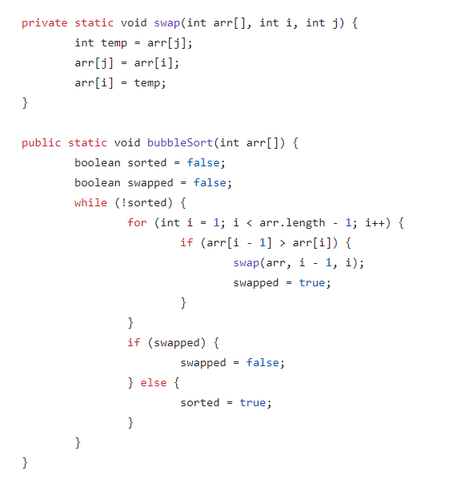
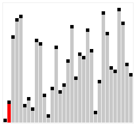
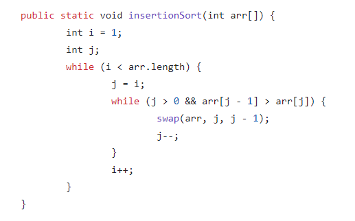
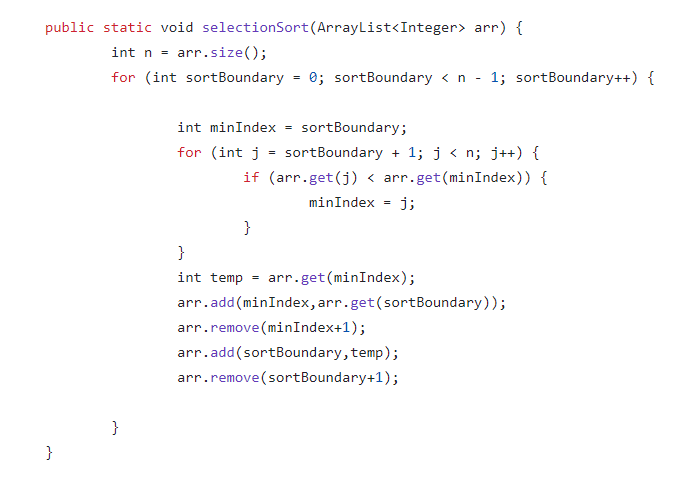

Bubble sort checks the first and second elements. If the first is larger, then the location of the two elements is switched. Then, the program checks the second and third elements. If the second is larger, then the two elements are swapped. This is repeated through the array multiple times until the array is sorted. It's time complexity is O(n^2), making it an inefficient sorting algorithm.
Here is a visual representation of how bubble sort works.

Here is what bubble sort implementation looks like in Java.

Insertion sort splits the list into two parts: a sorted and unsorted part of the list. First, the program selects the first element in the unsorted list. Then, it finds where it belongs in the sorted list and places it there. This repeats until the list is sorted. The time complexity is O(n^2), but insertion sort is faster than bubble sort.
Here is a visual representation of how insertion sort works.

Here is what insertion sort implementation looks like in Java.

Selection sort splits the list into a sorted and unsorted part. Then, it finds the smallest element in the unsorted list. The program places it in the sorted list. This process repeats until the list is sorted. The time complexity is O(n^2) but selection sort is faster than bubble and insertion sort.
Here is a visual representation of how selection sort works.

Here is what selection sort implementation looks like in Java.

Merge sort divides the list into n sublists of 1 element. Then, it repeatedly merges sublists to produce a new sorted sublist until you have 1: the sorted list. This sorting algorithm is significantly faster than the others. However, it takes a lot more memory because of the use of recursion. The time complexity is O(nLogn).
Here is a visual representation of how merge sort works.

Bogo sort repeatedly randomizes the array. Then, it checks if it is sorted. If not, the array is randomized again and checked. Its time complexity is O(n*n!).